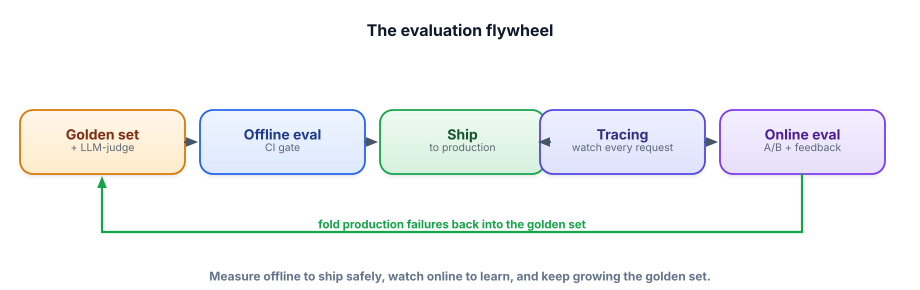

Capstone: a prompt/RAG eval harness
An eval harness is a reusable test rig for any AI system you build.
It runs the system on a fixed list of questions with known good answers, called a golden set.
Another model acts as the judge and scores each answer from 1 to 5.
Scores are averaged per category, such as billing or edge cases.
If any category drops compared with the last good version, the change is blocked.
Think of an exam board. Every class sits the same paper. Essay answers go to a marker with a mark scheme. Results come back per subject, not just one total. If any subject falls clearly below last year's marks, the results are held back until someone looks.
| In the picture | In the real system |
|---|---|
| The same exam paper for every class | golden.jsonl: fixed questions, expected answers, a category each |
| The marker with a mark scheme | The LLM judge: qwen2.5:7b returns a 1-5 score as JSON |
| Results per subject | Average score per category |
| Last year's marks | baseline.json, saved from the last good version |
| Results held back | gate.py exits 1 if a category drops more than 0.3 |
Where the picture breaks. Human markers are trained and fairly steady. An LLM judge can be noisy or biased, so you check it first: hand-mark 10 answers yourself and see if the judge agrees.
Going deeper
This is the project that signals “senior” louder than any other, because almost no one builds it: a reusable harness that scores any prompt or RAG system against a golden set, judges fuzzy quality with an LLM, and gates changes so regressions can’t ship. It’s the measurement discipline of Track 6 turned into a tool — free and runnable.
What you’re building
A small framework you can point at any LLM system (a prompt, the RAG bot from 14.1, the agent from 14.2) that: loads a golden set, runs the system on each case, scores with both exact/keyword checks and an LLM-as-judge, reports per-category results, and fails if quality regresses vs. a baseline. This is the “evaluation included” box graders look for (Track 15.5), made reusable.

$ pip install ollama
$ ollama pull qwen2.5:7b # used both as the judge and (optionally) the system under testStep 1 — The golden set (data is the product)
{"q": "What is the refund window?", "expected": "30 days from delivery", "category": "billing"}
{"q": "How do I reset my password?", "expected": "Settings > Security", "category": "technical"}
{"q": "Ship to the Moon?", "expected": "I don't know / not supported", "category": "edge"}
# ... 20-50 real cases, covering every category + edge/abstain/safety cases ...Step 2 — The harness (keyword + LLM-judge + per-category)
import json, ollama
from collections import defaultdict
def judge(question, expected, answer):
"""LLM-as-judge: is the answer correct vs the expected answer? Returns 1-5."""
p = f"""Score the ANSWER 1-5 for correctness vs the EXPECTED answer. Ignore wording/length.
Return JSON: {{"score": <1-5>}}.
QUESTION: {question}
EXPECTED: {expected}
ANSWER: {answer}"""
out = ollama.chat(model="qwen2.5:7b", messages=[{"role":"user","content":p}],
format="json", options={"temperature": 0})["message"]["content"]
try: return int(json.loads(out)["score"])
except: return 1
def evaluate(system_fn, path="golden.jsonl"):
rows = [json.loads(l) for l in open(path)]
by_cat = defaultdict(lambda: {"n": 0, "score": 0})
per_case = {}
for r in rows:
ans = system_fn(r["q"])
s = judge(r["q"], r["expected"], ans) # fuzzy quality (1-5)
by_cat[r["category"]]["n"] += 1
by_cat[r["category"]]["score"] += s
per_case[r["q"]] = s
overall = sum(c["score"] for c in by_cat.values()) / sum(c["n"] for c in by_cat.values())
return {"overall": overall, "by_category":
{k: v["score"]/v["n"] for k, v in by_cat.items()}, "per_case": per_case}Step 3 — The regression gate (CI for prompts)
import json, sys
from harness import evaluate
from my_system import answer # the prompt/RAG system you're changing
result = evaluate(answer)
baseline = json.load(open("baseline.json")) # committed scores from the last good version
print("overall:", round(result["overall"], 2), "vs baseline", baseline["overall"])
regressed = [c for c, v in result["by_category"].items()
if v < baseline["by_category"].get(c, 0) - 0.3] # tolerance for noise
if regressed:
print("❌ BLOCKED — regressed:", regressed)
sys.exit(1) # fail the build (run this in CI)
print("✅ OK — no regressions")- It’s the rarest thing in any portfolio — proof you measure quality systematically, not by vibes.
- It’s reusable: point it at the RAG bot (14.1), the agent (14.2), or any prompt — one harness, many systems.
- It demonstrates LLM-as-judge, per-category scoring, and a CI gate (Track 6.3–6.6) in working code.
- It’s genuinely useful — you’ll use it on your other capstones, which is a great story.
- Free and local: the judge is the same Ollama model.
1. Add retrieval metrics (recall@k/MRR) when evaluating a RAG system, separate from answer quality (Track 3.8) — so you know which half failed.
2. Validate the judge (Track 6.3): hand-score 10 cases and check the LLM-judge correlates with you.
3. Add pairwise comparison (“is version A or B better?”) for head-to-head prompt comparisons.
4. Wire gate.py into a GitHub Action so every PR runs the eval automatically.
▸ The interview narrative
“I built a reusable eval harness because measurement is what makes LLM systems shippable. It loads a golden set with categories and edge cases, scores each answer with an LLM-as-judge (validated against my own labels), reports per-category quality, and gates changes in CI — a regression on any critical category fails the build. I use it on all my projects, so I can adopt a new model or refactor a prompt and instantly know if quality moved.” This single project proves the entire Track 6 skillset and the “evaluation is the moat” thesis — the clearest senior signal you can give.
Why does the regression gate compare per-category scores rather than only the overall average?
Why is an eval-harness capstone especially valuable in interviews?
You can measure anything. Next, change a model’s behavior itself. Next capstone: a fine-tuned domain model.
In one line: Score every change on the same test, subject by subject, and block it if any subject gets worse.